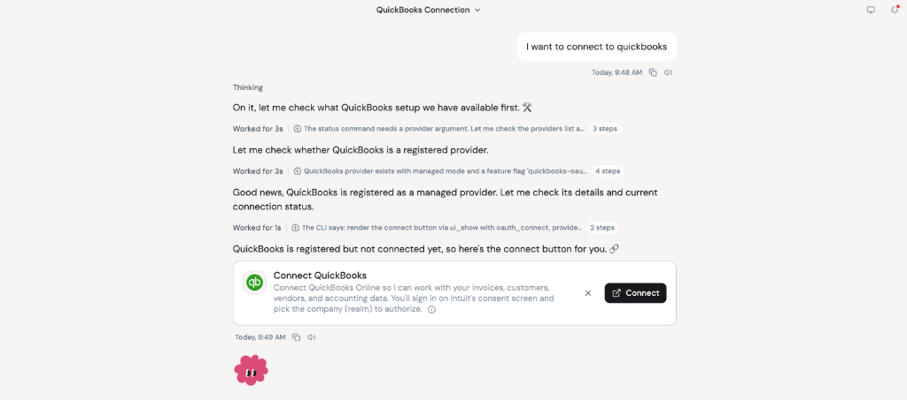

The problem
Every month, our CFO was spending 15+ hours a week inside QuickBooks preparing for month-end close, checking ledger entries, and reconciling accounts by hand to make sure every number was right.
On top of that, quick questions from the CEO took up even more time. Whenever the CEO asked something like "Did marketing overspend this month, and on what?", our CFO had to log back into QuickBooks, pull reports, and check the line items manually.
What we built
Instead of building a static dashboard that would go out of date the next time a new question came up, I connected our CFO's assistant directly to QuickBooks and set up the agent loop so it gets smarter every time he uses it:
- One-click QuickBooks login: I wired up QuickBooks with one-click OAuth authentication so the CFO can connect his account right inside chat without dealing with API keys.
- Reconciling accounts in chat: Instead of clicking through different QuickBooks screens to cross-check numbers for month-end close, he can ask his assistant to check balances, spot mismatches, and summarize vendor spend in seconds.
- An agent loop that writes its own skills: Inside the agent loop, I added a trigger powered by a meta-skill I built. Whenever the CFO explains a new accounting check or rule to the agent, that trigger automatically updates his existing finance skills or creates a brand-new skill for next time.

The result
- 15+ hours a week down to 4 hours: Cut manual QuickBooks reconciliation and month-end prep time by over 70%, saving more than 11 hours every week.
- Fast answers for the CEO: When the CEO asks if marketing overspent, the CFO just asks his assistant and gets a clear, QuickBooks-backed breakdown right away.
- The CFO expands it himself: Because the agent loop uses the meta-skill to save new accounting checks as skills, the CFO keeps adding new capabilities on his own without waiting on engineering.